Group Work(Yang Kaiyu, Cao Feier, Yao Yin, Chen Chuyi) Tutor: Brian Tool: Rhino Skill: System-Oriented Design
In China, about 26% urban residents and 44% rural residents have no access to improved sanitation.
50% of them defecate in the open environment.
Sanitation remains a neglected issue of which financial investments representing ONLY 20% of the total water, sanitation and hygiene sector expenditure.
Poor sanitation do harm to physical and mental health.
This time we are assigned to design an eco-toilet for the public and Kholer.
How to improve public sanitation and make it environment-friendly?
Public sanitation is redesigned from two perspective:
“inside the restroom” and “outside the restroom”.
For the first one, I fouces on the user experience and energy-efficiency.
For another, I concentrate on business development strategy to ensure the product can truely serve the public.
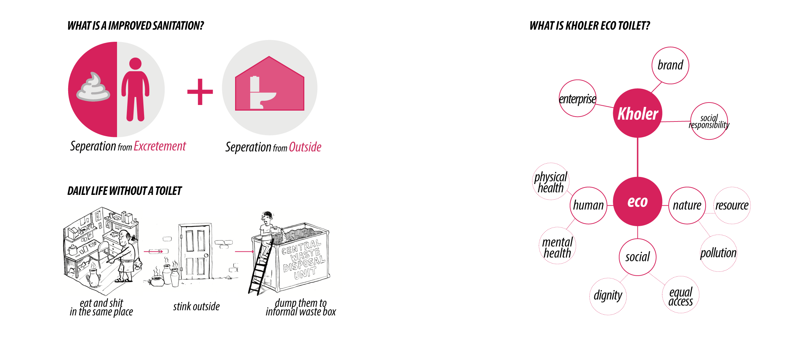
We define it as aenergy-efficient & human-centered public sanitary infrastructure made by Kholer with commercial value.
Then, we choose the URBAN VILLAGEin Shanghai, WHY?
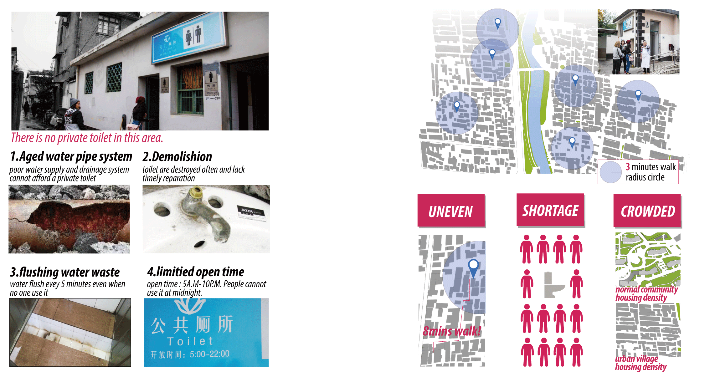
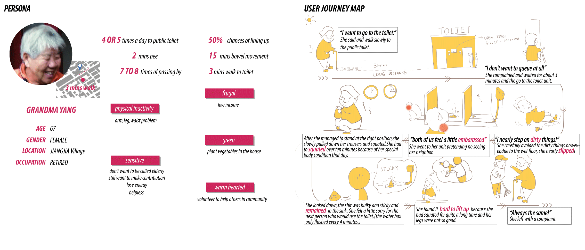
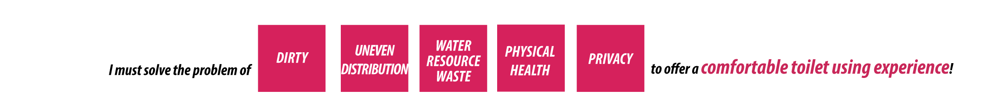
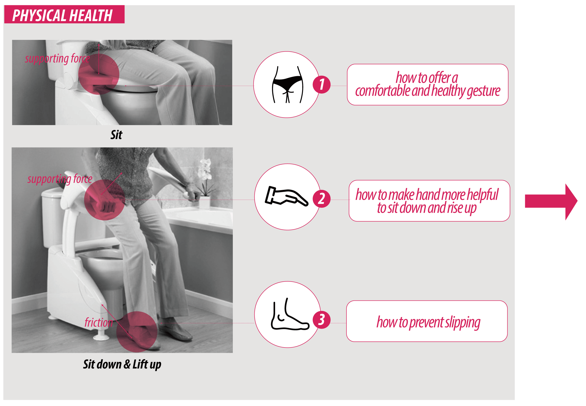
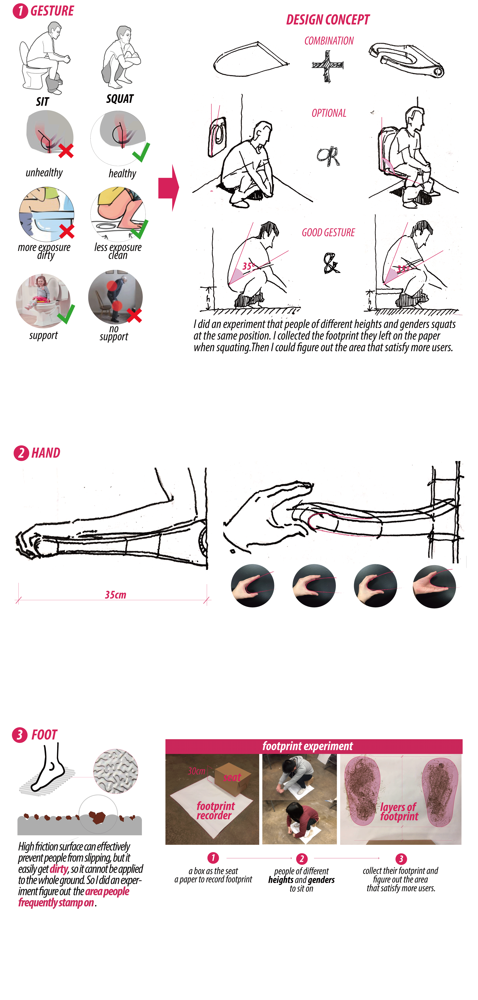
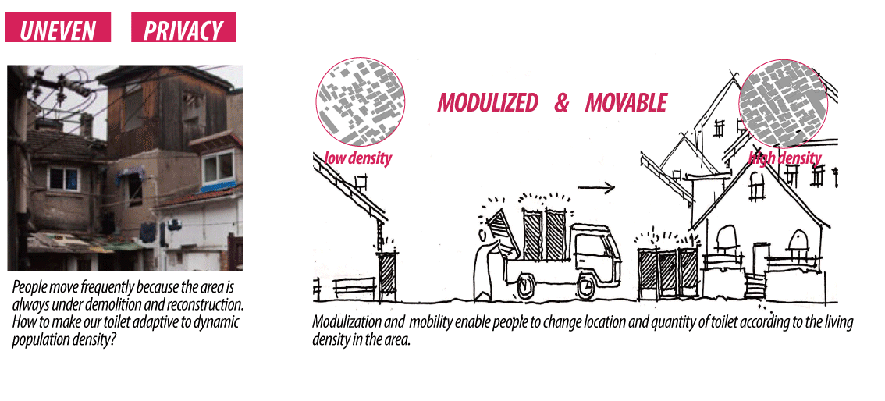
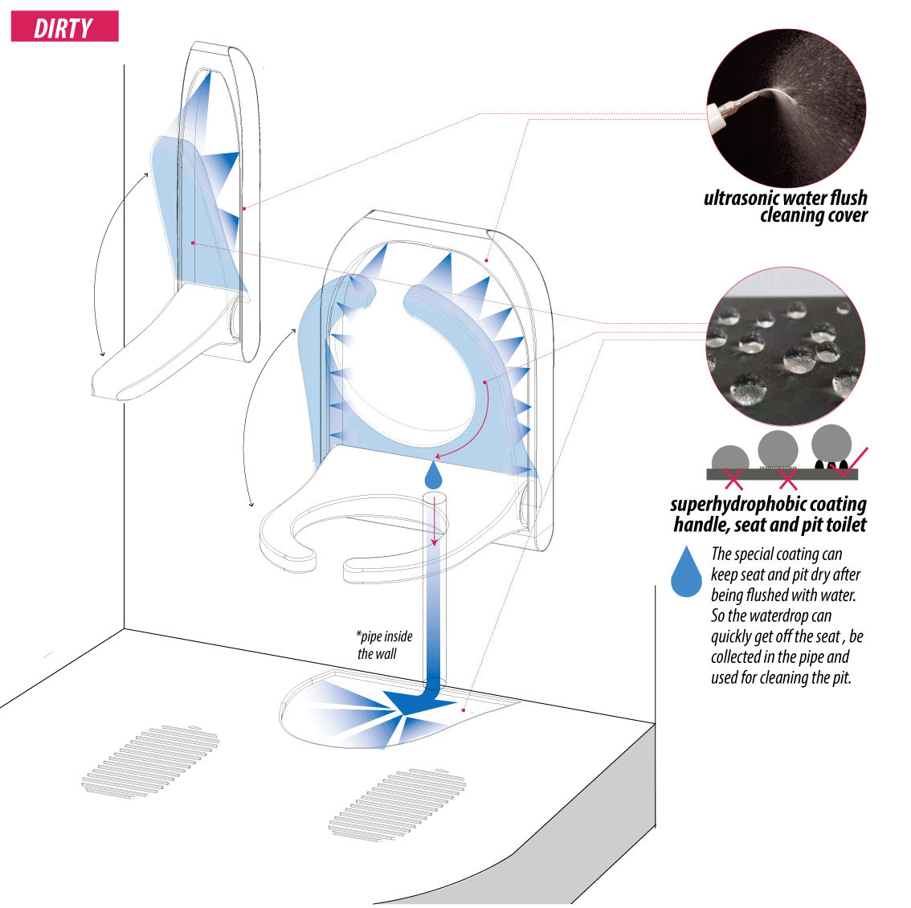
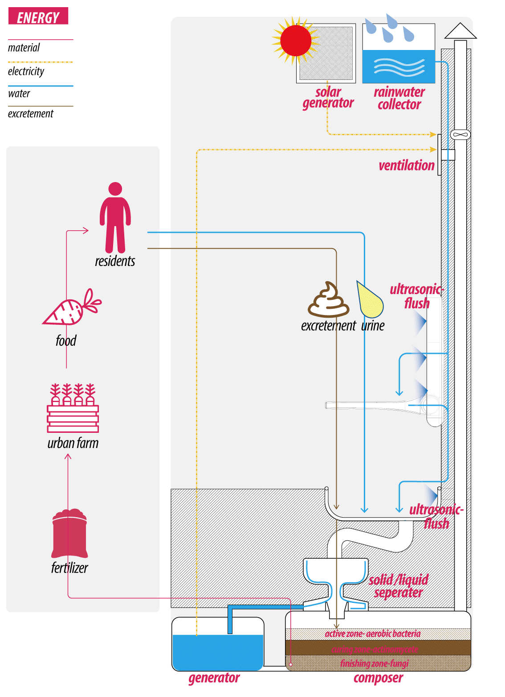
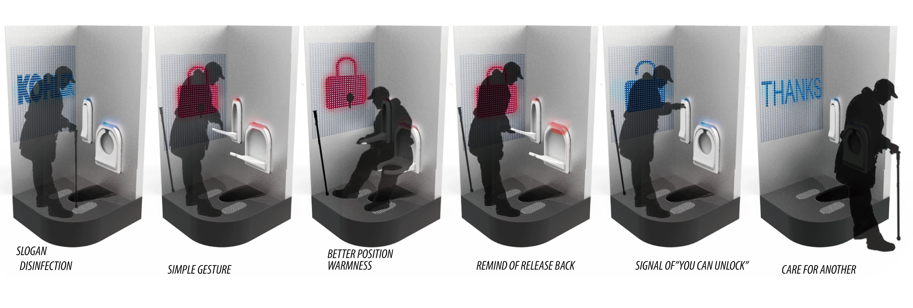
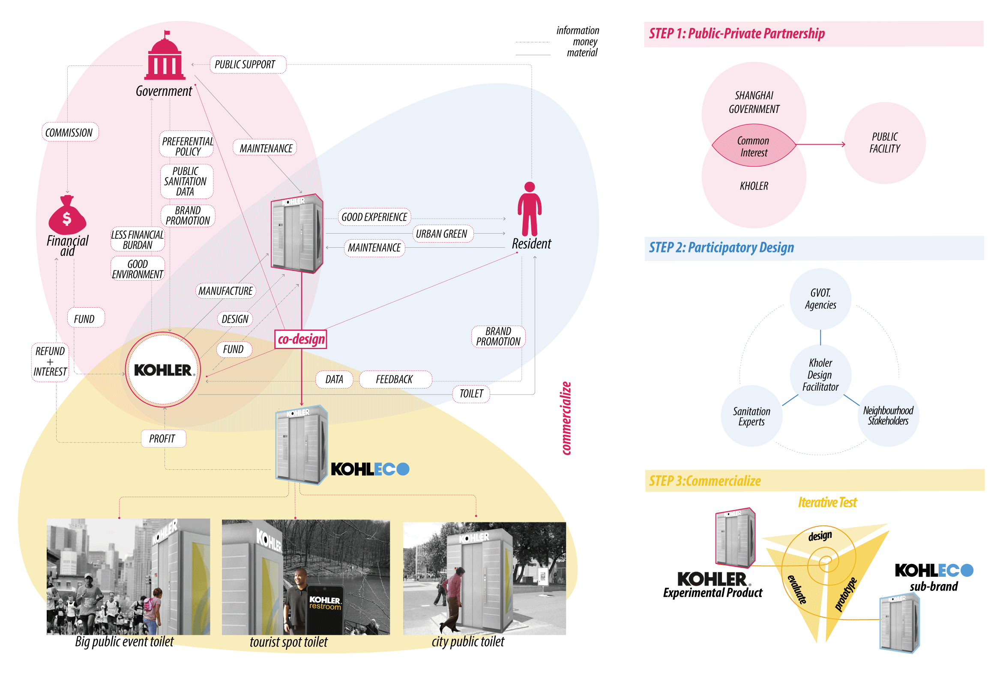